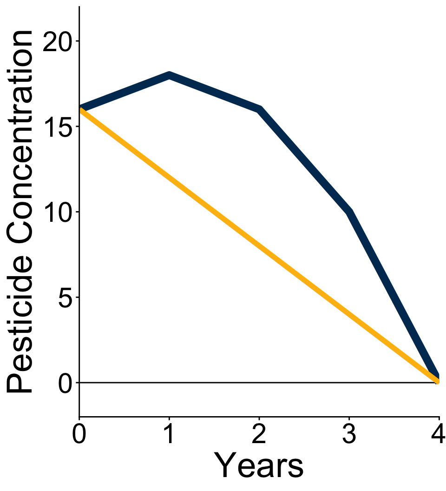

This wesbite is currently under construction: all slides are being reviewed and updated. Please come back on September 15, 2026 for the updated version.
Graphs
Graphs bring visual connection to math and data
Which looks better and is easier to understand?
library(DT)library(tidyverse)
── Attaching core tidyverse packages ──────────────────────── tidyverse 2.0.0 ──
✔ dplyr 1.2.1 ✔ readr 2.2.0
✔ forcats 1.0.1 ✔ stringr 1.6.0
✔ ggplot2 4.0.3 ✔ tibble 3.3.1
✔ lubridate 1.9.5 ✔ tidyr 1.3.2
✔ purrr 1.2.2
── Conflicts ────────────────────────────────────────── tidyverse_conflicts() ──
✖ dplyr::filter() masks stats::filter()
✖ dplyr::lag() masks stats::lag()
ℹ Use the conflicted package (<http://conflicted.r-lib.org/>) to force all conflicts to become errors
Rise over run can always be used to find average rate of change between two parts of a graph
Instantaneous rate of change leads us to ✨calculus✨.
Team Assessment
Your team measured the concentrations of pesticides in a lake exposed to agricultural runoff. You have the following equation describing the total amount of pesticides in the lake if runoff is stopped from the farm by a new policy incentive reducing pesticides use:
\[
\begin{aligned}
&y=(8-2t)(t+2) \\
&\text{Where } y \text{ is pesticde concentration in ppb} \\
&\text{and } t \text{ is time in years}.
\end{aligned}
\]
Work with your team to
first discuss conceptually how you would solve all the following tasks, do not write anything!
second work out with pen and paper the solutions to verify the ideas you discussed.
What kind of equation is this? Would it be useful to write it in another form?
How long will it take for the pesticide concentration in the lake to reach zero? Since the equation is a polynomial describe why one solution is more applicable than the other.
Present your findings (choose between a graph or table).
What is the average change in concentration from year 0 to year 4?
Explain to your client why concentrations might behave the way they were modeled.
Solution 1
Let’s expand out the equation so it becomes easier to graph.
Pesticides are removed from the lake at an average rate of 4 ppb per year.
Solution 5

Pesticide concentrations might initially increase in the lake from residual particles in the soil being washed into the lake. Then a mixture microbial activity and other chemical process reduce the pesticides to more inert components.
(You will learn the actual answer in ESM 202: Environmental Biogeochemistry)